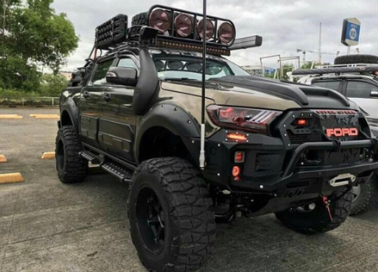
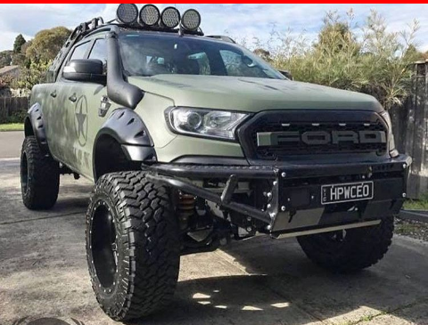
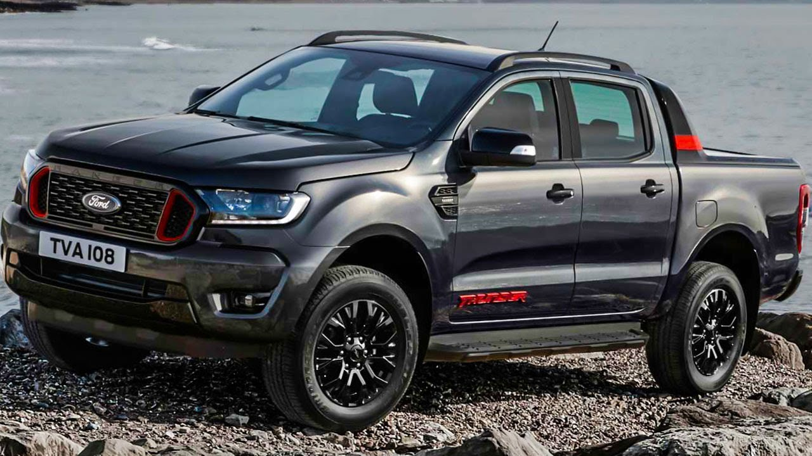

The ranger thunder is equipped like a luxury SUV , it excels with a host of safety systems fitted as standard. The Thunder is fitted with ABS Anti Lock Braking), EBA (Electronic Braking Assistance), TSC (Traction and Stability Control), Hill-start and Hill-descent control. You also get Lane Departure Warning, BSM (Blind Spot Monitoring), a tyre pressure monitoring system, front and rear PDC (Park Distance Control), a rearview camera, front and rear PDC (Park Distance Control), a rearview camer, 7 airbags annd ISOfix in the back if you have little ones.
The Ranger Thunder is not that much more expensive that the standard wildtrak, coming in at R 787 900 and comes with a comprehensive 4 year/120 000km warranty and a 6 year/90 000km service plan. Easily getting up to cruising speed and making use of the adaptive cruise control on the vast open section of pencils line straight roads, the Ranger Thunder quickly dipped below Fords claimed 8.01/100km. At one point we were sitting at 7.51 before the traffick to begin to pick up. Our short side trip into the bush, saw the numbers reverse just as quickly up to 8.5 and then 8.91/100 km. This indicates that the Ranger is well capable of being fuel frugal when not being pressed or harrased.
  